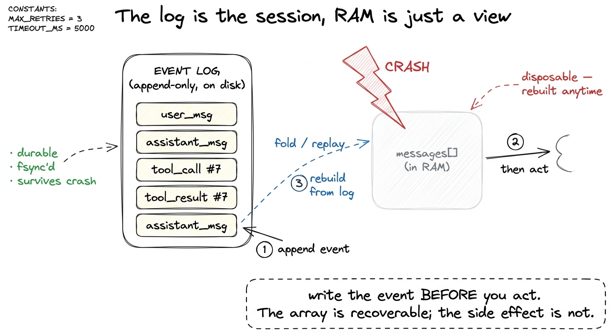
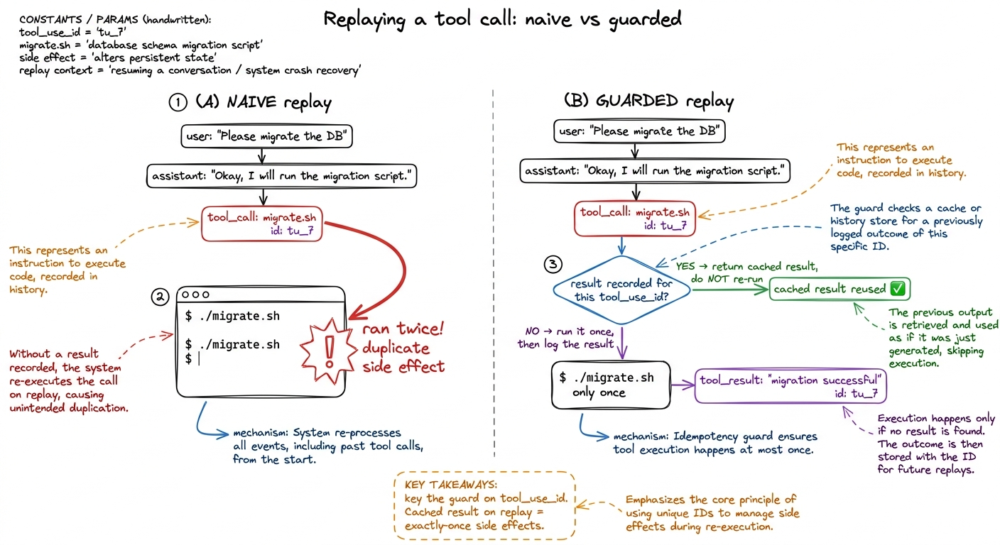
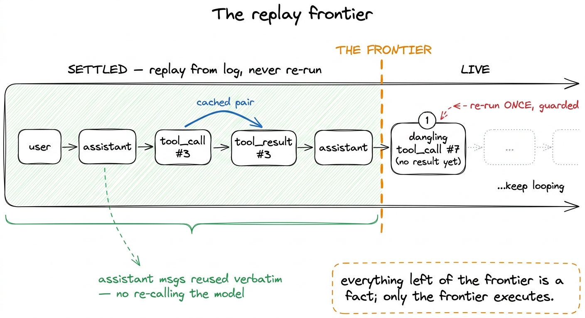
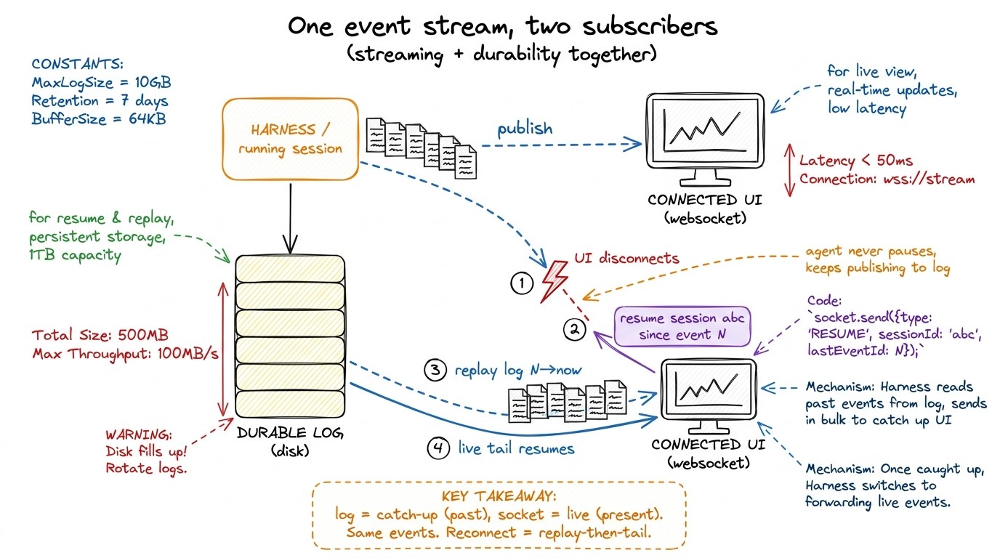

Replay & resumable sessions
Here is a small horror story every harness author eventually lives through. The agent is nine tool calls deep into a real task — it has read half your repo, edited four files, run the test suite twice — and then your laptop lid closes, or the SSH pipe drops, or the process gets OOM-killed. You reopen the terminal. Everything is gone. Not just the answer: the work. The agent has no idea it was ever alive, and if you naively re-run it, it happily re-applies edits it already made and re-runs the migration it already ran. You have lost the session and, worse, you cannot even trust what half-happened.
This chapter is about making that impossible. We want a session that, after a crash, disconnect, or restart, wakes up exactly where it left off — no lost work and, just as important, no duplicate side effects. The trick is not clever crash handling. It is a single structural decision made one layer down, in durable execution and checkpointing: keep a durable event log, and treat resuming as replay over that log. Once you have the log, resumability and even live UI reconnection fall out almost for free.
The one idea: the log is the session
Go back to your first bare harness. The agent's entire state lived in one Python variable — the messages array — held in RAM. That is the bug. RAM does not survive a crash, so the session does not survive a crash.
The fix is to stop treating the message array as the source of truth and instead treat it as a projection of something durable. Every meaningful thing that happens in a session — the user's request, the model's reply, a tool call, that tool call's result — is written as an event to an append-only log before we act on it. The messages array is then just what you get by folding those events back into shape. If the process dies, the RAM is gone but the log is on disk. To resume, you read the log, rebuild the array, and keep going.

figure rendering · The event log on disk is the real session; the in-memory message arrayConcretely, an event is tiny — a typed record with enough to reconstruct a turn:
import json, os, time, pathlib
def append_event(log_path, event):
event["ts"] = time.time()
with open(log_path, "a") as f:
f.write(json.dumps(event) + "\n") # one JSON object per line (JSONL)
f.flush()
os.fsync(f.fileno()) # actually hit the disk before we return
def load_events(log_path):
if not pathlib.Path(log_path).exists():
return []
with open(log_path) as f:
return [json.loads(line) for line in f if line.strip()]That fsync is the whole ballgame — it is the line that turns "probably saved" into "saved."1 fsync is not free; it can cost single-digit milliseconds per call. Harnesses that log very chatty streaming deltas often fsync only on turn boundaries (a complete assistant message, a complete tool result) rather than on every token, trading a sliver of durability for a lot of throughput. The rule of thumb: fsync before anything irreversible, batch the rest. Everything else in this chapter is bookkeeping on top of it.
Rebuilding the array is just a fold
Resuming a session is now embarrassingly simple: read every event and replay it into a fresh messages array. This is replay in its purest form — deterministic reconstruction of state from history.
def rebuild_messages(events):
messages = []
for e in events:
if e["type"] == "user_msg":
messages.append({"role": "user", "content": e["content"]})
elif e["type"] == "assistant_msg":
messages.append({"role": "assistant", "content": e["content"]})
elif e["type"] == "tool_result":
messages.append({"role": "user", "content": [{
"type": "tool_result",
"tool_use_id": e["tool_use_id"],
"content": e["result"],
}]})
return messagesNotice what this buys you beyond crash recovery: the same fold gives you --resume and --continue. Claude Code's claude --resume and pi's session files are exactly this — a stored log you can pick back up hours later.2 This is also why these harnesses can show you a searchable history of past sessions: if every session is a durable log on disk, listing and reopening them is just enumerating files. Durability and "resume that thing from Tuesday" are the same feature wearing two hats. Resuming after a crash and resuming a session you deliberately closed are the same code path. You did not build a special crash-recovery mode; you built a session that happens to be reconstructable, and crash recovery is a corollary.
The dangerous part: replaying tool calls
Here is where naive replay bites. Suppose the log ends like this:
assistant_msg: "I'll run the DB migration" + atool_calltorun_bash("./migrate.sh")- …crash, before we recorded any result.
We rebuild the array, we get to the end, and the model's last message is a tool request with no result. What do we do? If we just re-run the loop, we execute ./migrate.sh again — and now the migration has run twice. Reading a file twice is harmless. Running a migration, sending an email, git push, or charging a card twice is a disaster. This is the difference between a read (safe to repeat) and a side effect (not safe to repeat), and durable replay has to respect it.

figure rendering · Naive replay re-runs unfinished tool calls and duplicates side effectsThe guard is the same idea databases use: idempotency keyed on a stable id. Every tool call the model emits carries a unique tool_use_id. Before executing a tool during replay, we ask: have I already recorded a result for this exact id? If yes, we return the cached result from the log and do not touch the world again. If no, we run it once, then immediately log the result.
def run_tool_guarded(log_path, events, tool_use_id, name, args):
# 1. Replay path: did a previous life already finish this call?
for e in events:
if e["type"] == "tool_result" and e["tool_use_id"] == tool_use_id:
return e["result"] # cached — do NOT re-run the side effect
# 2. First time we've seen this id: run it exactly once...
result = run_tool(name, args)
# 3. ...and durably record the result BEFORE the model ever sees it.
append_event(log_path, {
"type": "tool_result",
"tool_use_id": tool_use_id,
"result": result,
})
return resultTrace the crash-in-the-middle case now. The migration's tool_call was logged, we ran ./migrate.sh, and — critically — we append_event'd the result before returning it up the loop. If the crash lands after that append, replay finds the cached result and skips the re-run: exactly-once. If the crash lands before the append, then from the world's perspective the side effect may or may not have completed, and we genuinely don't know — which is why the truly irreversible tools want an idempotency key passed down to the operation itself (a request id on the API call, --idempotency-key on the charge) so even a real double-execution collapses to one effect.3 This is the honest edge of the whole scheme: the harness can guarantee exactly-once dispatch from its side, but true end-to-end exactly-once requires the downstream operation to be idempotent too. Anthropic's own guidance in "Building Effective Agents" leans the same way — keep the agent's actions as reversible and idempotent as you can, and gate the ones that aren't behind a human. See permission gates and approval modes. The harness makes duplicates rare; idempotent operations make them harmless.
Replay semantics: cached vs. re-run, made explicit
Fold everything above into one rule you can state in a sentence, because it is the crux of the chapter. On replay, an event that already has a recorded outcome returns its cached outcome; only the trailing, unfinished work re-runs. The log is a wall of settled facts up to the last completed event; the agent resumes at the frontier and moves forward.
That gives us three cases at the moment of resume, and it is worth naming them:
- Completed tool call (call + result both logged) → return the cached result, never re-run. This is the common case and it is why reads and side effects alike are safe once they've finished.
- Dangling tool call (call logged, no result) → the one call we must re-execute, using the idempotency guard above so a partially-completed side effect isn't doubled.
- Trailing user turn (a request with no assistant reply yet) → simply call the model; nothing to cache, nothing to fear.
Do not re-call the model for turns it already completed. That would not just cost tokens — it would produce a different assistant message (models are stochastic), and your rebuilt session would diverge from the real one. Replay means reuse the recorded assistant messages verbatim; you only invoke the model at the live frontier. Cached vs. re-run is exactly this line: everything behind the frontier is cached and inert, everything at the frontier runs for real.

figure rendering · On resume, everything behind the frontier is replayed as cached fact;The durable loop, assembled
Now the loop from the agent loop gets its durable form. The shape is unchanged — call, check for tool, run, append, repeat — but every state transition goes through the log, and tool execution goes through the guard.
def run_durable_agent(log_path, user_request=None):
events = load_events(log_path)
if user_request: # fresh turn on an existing session
append_event(log_path, {"type": "user_msg", "content": user_request})
events = load_events(log_path)
while True:
messages = rebuild_messages(events) # state = fold(log)
reply = call_model(messages, TOOLS)
append_event(log_path, {"type": "assistant_msg", "content": reply.content})
events = load_events(log_path)
if reply.stop_reason != "tool_use":
return text_of(reply) # done; log holds the full session
for block in reply.content:
if block.type == "tool_use":
run_tool_guarded(log_path, events, block.id, block.name, block.input)
events = load_events(log_path) # pick up the results we just loggedKill this process at any line and re-run run_durable_agent(log_path) with no request: it reads the log, rebuilds the array, and either reuses a completed tool result or re-fires the one dangling call, then carries on. There is no separate "recovery" code — resuming is just running the same function against an existing log. That is the elegance the event log buys you.4 Production harnesses layer a bit more on top: a monotonically increasing sequence number per event to detect torn writes, a schema version tag so old logs still replay after you change the event shape, and often a periodic compacted snapshot so you don't replay a 10,000-event log from scratch every time — the same snapshot-plus-tail pattern databases use. The core, though, is exactly what's above.
Streaming and durability, together
The last piece is the one that makes this feel alive instead of batch. Real harnesses stream — tokens and tool calls appear on your screen as the model produces them, which we covered in streaming responses and streaming tool calls to the UI. At first glance streaming and durability seem in tension: streaming is ephemeral deltas flying by, durability is settled facts on disk. In fact they compose beautifully, because they are the same event stream consumed by two subscribers.
When the harness produces an event — an assistant token delta, a completed message, a tool result — it publishes it to two places at once: appended to the durable log, and pushed to any connected UI. The log is the durable subscriber; the socket is the live subscriber. Neither is the source of truth on its own; the event is.
This is what makes UI reconnection work, and it is a genuinely delightful property. Say you close your laptop mid-response and reopen the web UI. The frontend reconnects and asks: give me everything for session abc since event N. The server replays the log from N to now (instant — it's on disk) to catch the UI up to the present, then keeps streaming new events live from that point. The user sees the full response materialize as if they'd been watching the whole time, even though the browser was asleep for the middle of it. The running agent never paused; a subscriber merely detached and reattached.

figure rendering · Every event is published to both the durable log and the live UI sockeThe mental model to keep: a session is a process producing an ordered event stream; the log is that stream persisted, and any UI is a view onto it that can join, leave, and rejoin at will. Because the log is authoritative, it does not matter whether zero, one, or three browser tabs are watching — the agent's progress is independent of who is looking. That decoupling is what lets Claude Code keep working when you background it and lets a web agent survive a flaky connection.
What you built, and what's next
With one structural move — write every event to a durable log before acting, and rebuild state by folding the log — you got four things that usually cost four separate systems: crash recovery, session resume/continue, exactly-once tool execution via the tool_use_id guard, and reconnectable live streaming. None of them is a special case; each is a consequence of the log being the real session.
What this layer does not yet handle is failure that isn't a crash: a tool that returns an error, a model call that times out, a transient 529. Replay gets you back to a consistent state, but it doesn't decide what to do when the work itself keeps failing. That is the job of the next chapter, self-healing loops, where the harness learns to retry, back off, and route around errors instead of dying on them — turning a durable session into a resilient one.